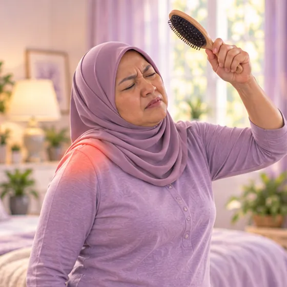
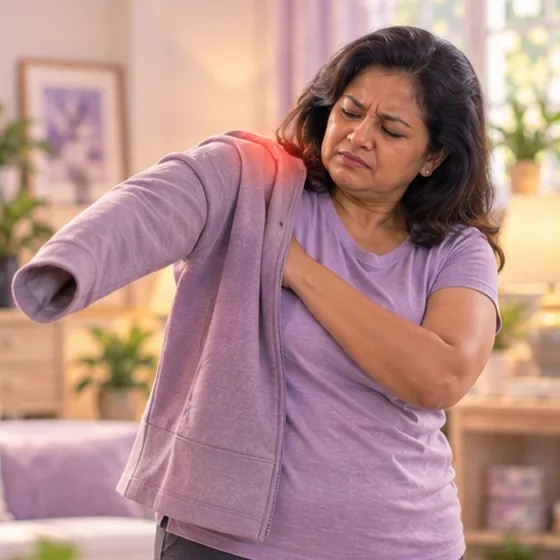
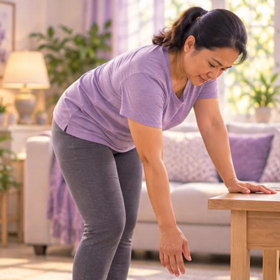
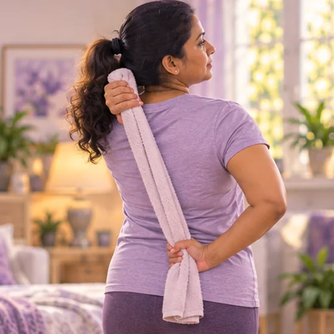

肩周炎
也称粘连性肩关节囊炎、冻结肩
这是什么
肩关节周围的组织变紧、增厚，引起疼痛和僵硬，手臂的活动越来越受限。
- 肩关节
- 多见于40到60岁
- 疼痛僵硬
- 就诊科室
- 家庭医生、骨科、康复科
- 多发人群
- 40到60岁的成人，女性稍多
- 传染性
- 不传染
- 病程
- 缓慢：常为1到3年，分三个阶段
医学详情
肩部发生了什么
肩关节是球窝关节，外面包着一层薄而有弹性的关节囊。冻结肩时，关节囊先发炎，然后变厚、变紧，形成类似瘢痕的粘连带，关节液也减少。关节无法再活动到正常范围，每次想拉伸都会疼痛。通常只影响一侧肩膀，另一侧有时会在之后出现。
三个阶段
- 冻结期： 疼痛慢慢加重，夜间更明显，活动范围开始缩小；持续约2到9个月
- 冻结（僵硬）期： 疼痛可能减轻，但肩膀非常僵硬；持续约4到12个月
- 解冻（恢复）期： 活动度在约6个月到2年内慢慢恢复
预后
冻结肩通常会在1到3年内自行好转，但可能需要很长时间。规律的轻柔活动、医生选择的止痛和物理治疗可以让过程更舒适。少数人会遗留一点僵硬。
常见表现

梳头、扎头发困难肩关节外展受限 手够不到背后肩关节内旋受限 
穿外套困难肩部活动受限 夜里肩痛醒夜间痛 肩膀僵住了粘连性关节囊炎僵硬 够高处的东西困难上举动作受限
医学详情
症状详解
- 疼痛： 肩部深处的钝痛或酸痛，有时扩散到上臂；夜间以及压着肩膀睡时更明显
- 僵硬： 手臂无法向侧方或前方抬起，也无法向外或向背后转；别人帮忙也移动不了多少，这是冻结肩的关键特征
- 日常动作： 梳头、穿衣、系内衣扣或皮带，以及够架子或安全带都变得困难
- 不典型的表现： 手臂发麻或刺痛、颈痛比肩痛更重，或肩部发热、发红、肿胀，需要医生检查
为什么会这样
多见于40到60岁高发年龄段 受伤后手臂长期不动制动 糖尿病相关代谢疾病 手臂长时间少活动肩部活动度下降 以前的肩部损伤既往肩袖损伤 生病后长期卧床长期活动减少
医学详情
病因和危险因素
很多时候找不到明确的原因。冻结肩与手臂长期不活动以及一些健康问题有关。
- 年龄和性别： 多见于40到60岁，女性更常见
- 活动减少： 骨折、手术、中风或长期生病之后，或手臂长期保持不动
- 糖尿病： 糖尿病患者更容易发生，恢复也可能更慢
- 其他疾病： 甲状腺功能减退或亢进、心脏或肺部疾病，以及一些神经系统疾病
- 以前的肩部损伤： 劳损或肩袖损伤之后可能出现肩膀僵硬
出现这些情况请先看医生
- 跌倒或受伤后的肩痛
- 疼痛伴胸闷、出汗或气促：拨打999
- 肩部发热、发红、肿胀，或发烧
- 手臂或手部发麻、刺痛或无力
- 难以忍受的夜间剧痛
- 几周后肩膀仍无好转
如果有以上情况，请先看医生，再来做调理。
请继续按医嘱服药，并按时复诊。我们的调理是温和的辅助，不能代替医疗。
医学详情
医生如何检查
- 体格检查： 医生会向各个方向活动你的手臂，比较你自己活动和别人帮忙活动的范围；冻结肩时两者都受限
- X光： 冻结肩时通常正常；用来排除关节炎、骨折或钙化
- 超声或磁共振： 可以显示肌腱和关节囊，主要用来排除肩袖撕裂
症状相似的其他问题
颈部问题、肩袖撕裂、肩关节炎，以及少见的心脏问题都可能引起肩痛，所以需要由医生来鉴别。
疼痛同时伴有胸闷、出汗或气促，可能是心脏问题：请立即拨打紧急电话（999）。
日常护理

手臂轻轻摆动钟摆运动 手指沿墙向上爬爬墙拉伸 
毛巾背后拉伸辅助内旋拉伸 拉伸前先热敷浅表热敷 睡觉时垫好手臂睡眠姿势调整 每天尽量使用手臂主动活动度训练
医学详情
日常护理详解
- 先热身： 拉伸前先热水淋浴或热敷约10分钟，让肌肉放松
- 轻柔拉伸： 钟摆运动、手指爬墙和毛巾拉伸，每天做几次短时间练习，在舒适范围内，不要用力硬拉
- 继续使用手臂： 在不引起尖锐疼痛的范围内做日常动作；长期不动会让肩膀更僵
- 睡眠： 睡在健侧，胸前放一个枕头托住疼痛的手臂，或仰睡时把手臂放在枕头上
- 止痛： 请询问医生或药剂师哪种对你安全；不要自行开始新的药物
- 物理治疗： 物理治疗师可以按不同阶段指导合适的练习；早期疼痛明显时过度拉伸可能加重
告诉理疗师
- 最近肩部受伤或手术
- 肩部发热、发红或肿胀
- 手臂发麻刺痛
- 骨质疏松
- 心脏起搏器或金属植入物
- 糖尿病或皮肤感觉减退
调理师会在开始前和你确认这一项。
常见问题
肩周炎是什么？
也称粘连性肩关节囊炎、冻结肩。肩关节周围的组织变紧、增厚，引起疼痛和僵硬，手臂的活动越来越受限。
肩周炎有哪些常见表现？
梳头、扎头发困难；手够不到背后；穿外套困难；夜里肩痛醒；肩膀僵住了；够高处的东西困难
为什么会有肩周炎？
多见于40到60岁；受伤后手臂长期不动；糖尿病；手臂长时间少活动；以前的肩部损伤；生病后长期卧床
有肩周炎要怎么照顾自己？
手臂轻轻摆动；手指沿墙向上爬；毛巾背后拉伸；拉伸前先热敷；睡觉时垫好手臂；每天尽量使用手臂
AI Body Master 的调理对肩周炎有帮助吗？
调理是温和的无针经络养生辅助，不能治疗或治愈肩周炎，也不能代替药物或医生。开始前请告诉理疗师。
相关疾病
参考资料: Mayo Clinic: Frozen shoulder; NHS: Frozen shoulder; Cleveland Clinic: Frozen shoulder; NCBI StatPearls: Adhesive Capsulitis
页面更新: 2026-11-09